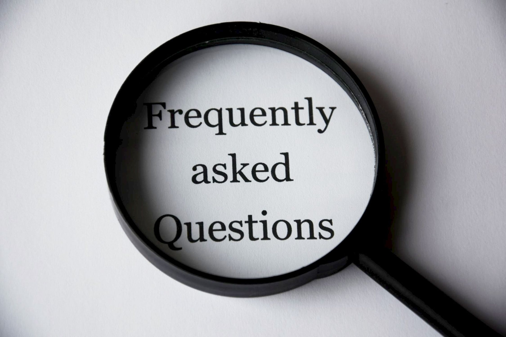

Frequently Asked Questions
What is media literacy and why is it important?
In short, media literacy is the ability to think critically about the information you consume and create. It includes the ability to distinguish fact from opinion, and to understand how media can sometimes be used to persuade people. Media literacy is important because it is the basis for being an informed and critical thinker in a world where technology and media are ubiquitous, helping to immunize people against undue persuasion and false information.
What is fake news and why do people create it?
Fake news is any information that is deliberately meant to be wholly or largely false or misleading. Motivations for creating fake news include financial gain – by getting people to click on sites so they’re exposed to advertising – or to persuade others to take an action, purchase a product, or support or oppose a cause or political candidate. Some people perpetuate fake news just for the sake of deceiving people or as a prank. Honest mistakes happen and they are not fake news. But those who publish or say something that they later find out to be untrue have an obligation to correct the record.
How do we explain the difference between facts and opinions?
Both fact and opinion help us understand the world around us. Facts are accurate reports of what happened or what exists, while opinions are an interpretation of the meaning or impact, usually from an individual's perspective. It’s legitimate for an opinion to be influenced by a person’s world view, but even those who express an opinion should back them up with facts rather than inaccurate information.
How can you spot fake news?
Consider the source and other stories coming from that source. Do they ring true? Is the URL legitimate? Does the “news story” seem one-sided or biased toward a particular point of view? Also, consider the article’s author. Is there evidence that it’s a real person? Search for the source and author to see what else they’ve published and what others are saying about them. Sometimes you can tell if a story is true by copying a string of its text and pasting it into a search engine. Often (but not always) this will bring up sites that may dispute or confirm the story, but it may also bring up other fake news sites that repeat the story. FactCheck.org has other good tips for spotting fake news.
What is the right thing to do when you spot fake news?
While it’s never OK to spread fake news, it is OK to comment on links to fake stories with your own correction, to help set the record straight.
Please refer to this link for more info:
Clike Here